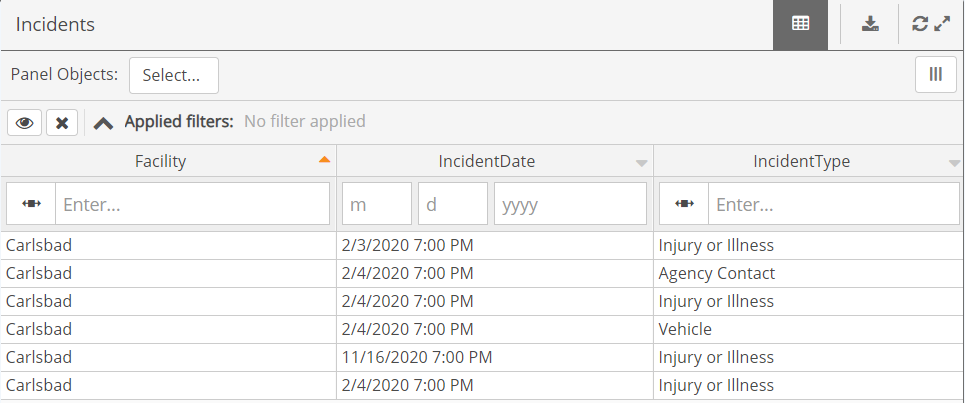
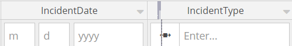
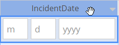
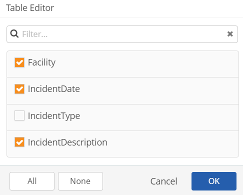
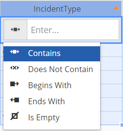

A Data View Panel will display data from a Data View created in the Data Preparation Tool. The data will be displayed in a table format, and will be filtered by a selected date. A Data View Panel allows you to:
Download data to an Excel file.
Edit the data display by choosing the columns you want to see and re-arrange columns to maximize the view for your own purposes.
Display data from the system, including data types not supported by other panels, as well as groupings and aggregations not supported by other panels.

Change a panel view
You can expand the panel to be full screen by clicking the Expand icon. To refresh the data on the panel, click the Refresh icon.
Viewing options
Scroll the table horizontally or vertically.
Sort records by a column, by clicking the column head. Click again to change sort order to ascending or descending.
To resize a column, hover over the right edge of the column header until the slider appears, then select and hold while you drag and drop to the new width.

To move a column, hover over the column header to select the column, click and hold, and drag and drop the column to the desired position.

Click the icon to edit or filter the columns in the view.

Data view columns with links
A Data View may contain a column with links. These are the available link types:
The Form link takes you to the workflow step form, where you can view or edit the information directly from the Portal. See View or Edit Workflow Step.
This Link icon takes you to the workflow form in the Management System. Workflow records from other apps may include a link to open the appropriate app and the specific form or record in that app:
Link to AuditApp
Link to InspectionApp
Link to custom app (WAB app or URL macro)
Link to IncidentApp
Add a filter
Click the filter box at the top of the column.
Depending on the field time, you can enter a value, or a partial value for a text field, or choose from a drop-down list.
Click the icon next to the box to choose the filter condition.
Any filters that have been applied are displayed above the panel.
Search within a Data View
Click the search icon at the top of the column. A drop-down menu will display the Contains, Does Not Contain, Begins With, Ends With, and Is Empty commands.

Select the desired command, and enter the search criteria.
To remove the search criteria, click the Reset icon:
 The Form link takes you to the workflow step form, where you can view or edit the information directly from the Portal. See View or Edit Workflow Step.
The Form link takes you to the workflow step form, where you can view or edit the information directly from the Portal. See View or Edit Workflow Step. This Link icon takes you to the workflow form in the Management System. Workflow records from other apps may include a link to open the appropriate app and the specific form or record in that app:
This Link icon takes you to the workflow form in the Management System. Workflow records from other apps may include a link to open the appropriate app and the specific form or record in that app: Link to AuditApp
Link to AuditApp Link to InspectionApp
Link to InspectionApp Link to custom app (WAB app or URL macro)
Link to custom app (WAB app or URL macro)